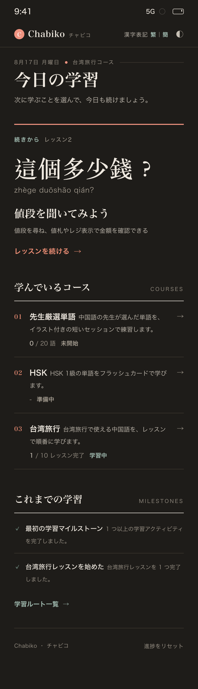
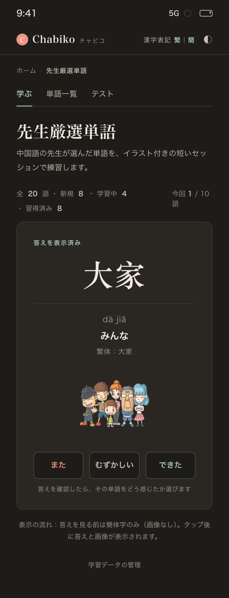
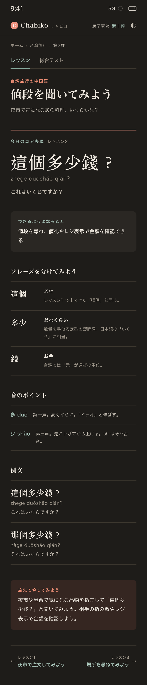
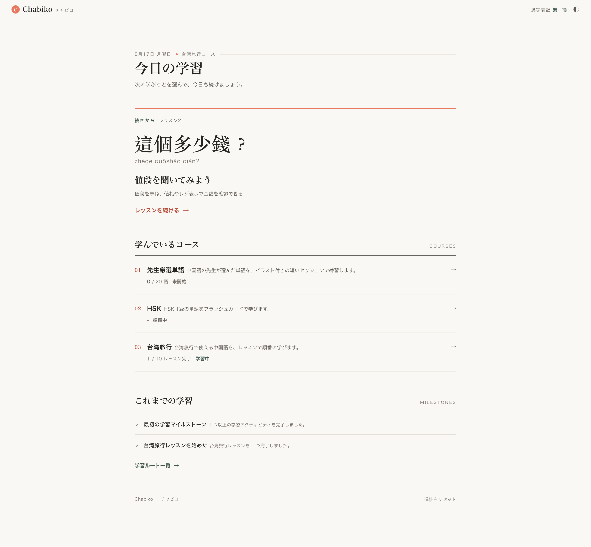
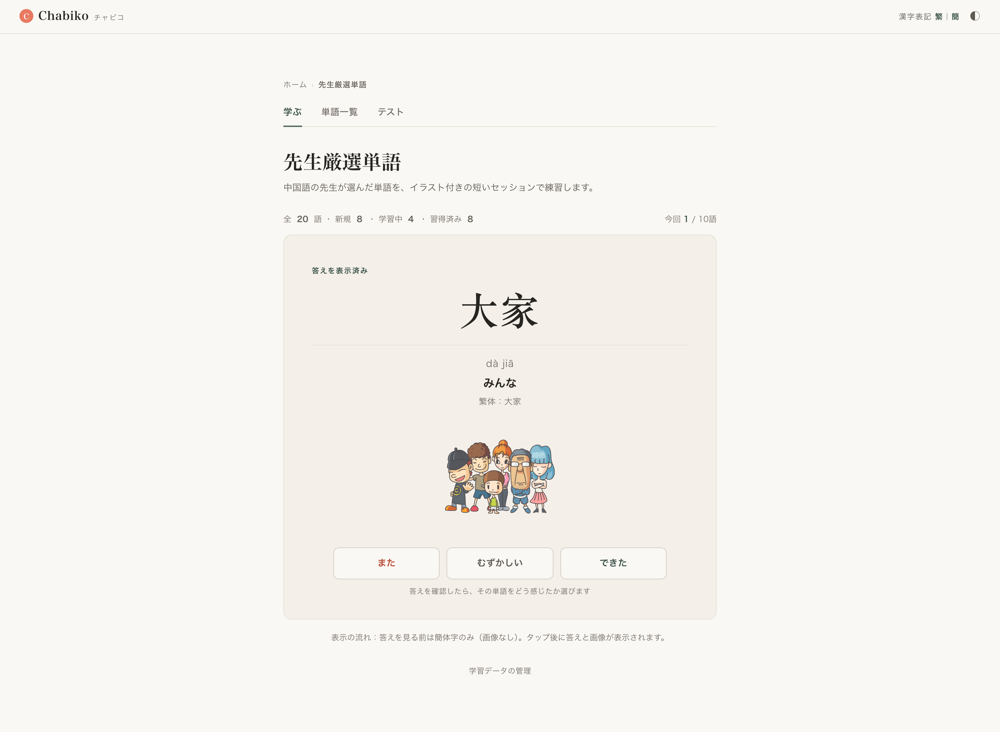
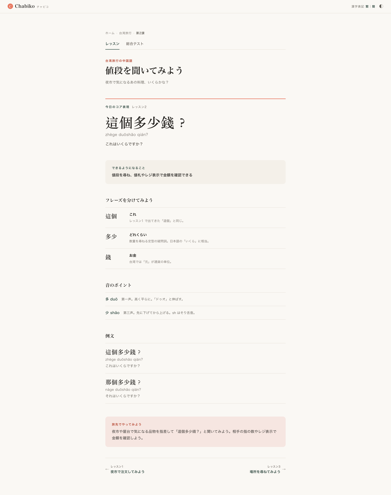
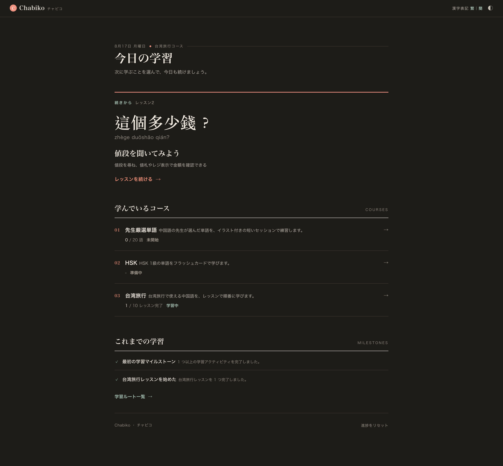
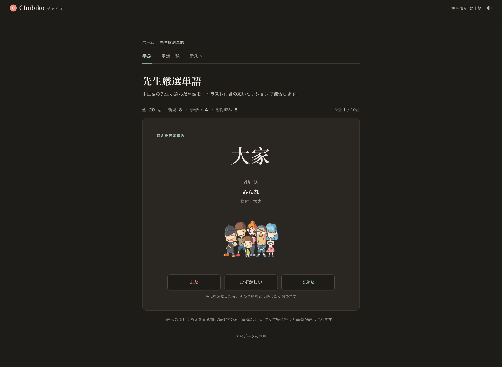
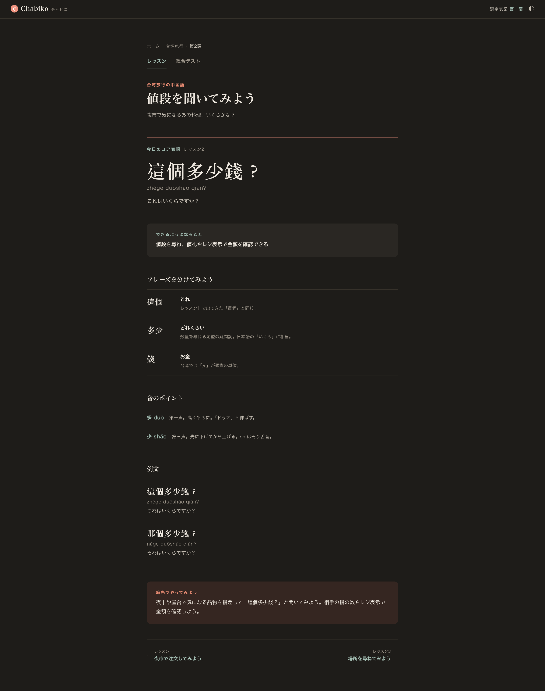

同一の visual language を三頁が共有する。Issue #389 · 390px mobile / 1440px desktop / 320px 検証 / dark mode









320px 検証：三頁とも scrollWidth == clientWidth == 320（水平 overflow なし）。
中文 46px は 320px で 40px に縮小、padding は 28px → 20px。
先生厳選単語 revealed-state：production contract（答えを見る前は画像なし・簡体字のみ → reveal 後に答えと画像）を
保持。画像は supporting（mobile 180px / desktop 220px 幅）で、中文（52px）より下に配置。
Artwork finding：現行 illustration は教材插圖パック由来（黒背景・平塗り）。freeze 前に扱いを決定。詳細は grammar.md。